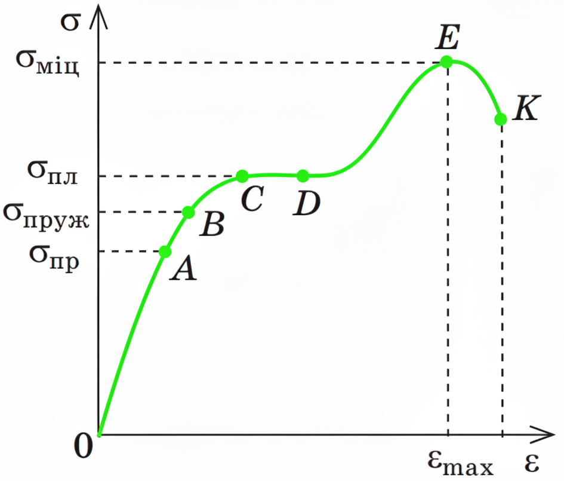

Механічні властивості твердих тіл та теплове розширення#
Коли ми застосовуємо силу до твердого тіла, воно змінює свою форму або розміри. Це явище ми називаємо деформацією.
Деформація твердих тіл#
Деформація - це зміна форми та/або розмірів тіла під дією зовнішніх сил або інших чинників (наприклад, температури).
Причиною деформації є зміна відстаней між атомами та молекулами та кутів між зв'язками, що їх утримують. Коли ми розтягуємо тіло, атоми віддаляються один від одного, а коли стискаємо - наближаються.
Види деформацій за характером зміни форми#
Залежно від напрямку прикладеної сили та способу зміни форми тіла, ми можемо виділити кілька основних видів деформацій. Важливо пам'ятати, що реальні деформації часто є комбінацією цих простих видів.
Деформація розтягнення: Виникає, коли сили спрямовані відносно центру тіла, намагаючись його видовжити. Прикладом є розтягування гумової стрічки, пружини або сталевого троса, що тримає вантаж. Під час розтягнення довжина тіла збільшується, а його поперечні розміри (ширина, товщина) зазвичай зменшуються.
Деформація стиснення: Виникає, коли сили спрямовані до центру тіла, намагаючись його скоротити або зменшити в об'ємі. Це відбувається, коли ми натискаємо на цеглу, стискаємо губку або колону, що підтримує будівлю. При стисненні довжина тіла зменшується, а поперечні розміри збільшуються.
Деформація вигину: Виникає, коли сили прикладаються перпендикулярно до осі тіла, змушуючи його прогинатися. Приклад: балка моста під вагою автомобілів, або коли ми згинаємо лінійку. Цікаво, що при вигині верхня частина тіла зазнає деформації стиснення (вона коротшає), а нижня - деформації розтягнення (вона видовжується). Між ними існує так званий нейтральний шар, де напруги відсутні, а довжина волокон не змінюється.
Деформація зсуву: Виникає, коли сили діють паралельно до поверхні тіла, намагаючись зсунути одну частину тіла відносно іншої. Уявіть стопку книжок, на яку ми натискаємо зверху, зсуваючи верхні книжки відносно нижніх. Або коли ми ріжемо папір ножицями - леза створюють зсув. Цей вид деформації часто спостерігається у заклепках, болтах, або при різанні матеріалів.
Деформація кручення: Виникає, коли сили намагаються повернути одну частину тіла відносно іншої навколо спільної осі. Це, по суті, різновид деформації зсуву, що виникає по колу. Приклад: закручування викруткою гвинта, або коли ми викручуємо мокрий рушник. Вали двигунів, торсіонні підвіски автомобілів працюють на кручення.
Анізотропія та деформація#
У попередній лекції ми обговорювали анізотропію - залежність властивостей матеріалу від напрямку. Важливо пам'ятати, що для анізотропних матеріалів (наприклад, монокристалів або деревини) механічні властивості, такі як жорсткість або міцність, будуть різними залежно від того, в якому напрямку прикладена сила. Це означає, що, наприклад, розтягувати кристал вздовж однієї осі може бути легше, ніж вздовж іншої. Для ізотропних матеріалів (аморфні тіла, полікристали з хаотичною орієнтацією зерен) механічні властивості однакові в усіх напрямках. Це має вирішальне значення при проектуванні конструкцій з різних матеріалів.
Види деформацій за оборотністю#
Ми також можемо класифікувати деформації за тим, чи повертається тіло до своєї початкової форми після зняття навантаження.
Пружна деформація: Це деформація, яка повністю зникає після припинення дії зовнішніх сил. Тіло повністю відновлює свої початкові розміри та форму. Уявіть, як ми розтягуємо пружину, а потім відпускаємо - вона повертається у вихідне положення. Більшість матеріалів демонструють пружну деформацію до певної межі. У цьому випадку атоми лише трохи зміщуються зі своїх положень рівноваги, а сили міжатомної взаємодії повертають їх на місце.
Пластична (залишкова) деформація: Це деформація, яка зберігається навіть після припинення дії зовнішніх сил. Тіло не повертається до своєї початкової форми. Приклад: коли ми згинаємо мідний дріт, він залишається зігнутим. Це відбувається тому, що атоми або цілі шари атомів зміщуються зі своїх початкових положень і займають нові положення рівноваги, які є стабільними навіть без зовнішнього навантаження. Пластична деформація є основою для багатьох технологічних процесів, таких як кування, штампування, прокатка металів.
Механічна напруга, відносне видовження та коефіцієнт Пуассона#
Для кількісного опису деформацій та сил, що їх викликають, ми використовуємо поняття напруги та деформації.
Абсолютне видовження#
Абсолютне видовження (\(\Delta l\) або \(x\)) - це зміна довжини тіла в результаті деформації. Якщо тіло видовжується, \(\Delta l > 0\); якщо стискається, \(\Delta l < 0\).
Ми можемо розрахувати його як різницю між кінцевою довжиною (\(l\)) та початковою довжиною (\(l_0\)):
Одиницею вимірювання абсолютного видовження в системі СІ є метр (м).
Відносне видовження (відносна деформація)#
Відносне видовження (\(\varepsilon\)) - це відношення абсолютного видовження до початкової довжини тіла. Ця величина показує, наскільки сильно змінилася довжина тіла відносно його початкового розміру.
Відносне видовження є безрозмірною величиною, оскільки це відношення двох довжин. Іноді його виражають у відсотках (%).
Механічна напруга#
Коли тіло деформується, всередині нього виникають внутрішні сили, які протидіють цій деформації та намагаються повернути тіло до початкового стану (якщо деформація пружна). Ці внутрішні сили розподілені по площі поперечного перерізу тіла.
Механічна напруга (\(\sigma\), читається "сигма") - це фізична величина, що характеризує інтенсивність внутрішніх сил, які виникають у деформованому тілі. Вона визначається як відношення величини внутрішньої сили пружності (\(F_{\text{пруж}}\)), що діє перпендикулярно до площі поперечного перерізу, до цієї площі (\(S\)).
\[ \sigma = \frac{F_{\text{пруж}}}{S} \]
де:
\(F_{\text{пруж}}\) - сила пружності, що виникає всередині тіла (Н).
\(S\) - площа поперечного перерізу тіла (м²).
Одиницею вимірювання механічної напруги в системі СІ є Паскаль (Па). \(1 \text{ Па} = 1 \text{ Н/м}^2\).
Часто напругу вимірюють у мегапаскалях (МПа) або гігапаскалях (ГПа), оскільки паскаль є дуже малою одиницею для інженерних розрахунків. \(1 \text{ МПа} = 10^6 \text{ Па}\), \(1 \text{ ГПа} = 10^9 \text{ Па}\).
Коефіцієнт Пуассона#
Коли ми розтягуємо тіло вздовж однієї осі, воно не тільки видовжується, але й стискається (звужується) у перпендикулярних напрямках. Це явище описує коефіцієнт Пуассона.
Коефіцієнт Пуассона (\(\nu\), читається "ню") - це безрозмірна фізична величина, що характеризує пружні властивості матеріалу і визначається як відношення відносної поперечної деформації до відносної поздовжньої деформації при одновісному розтягуванні або стисненні.
де:
\(\varepsilon_{\text{попер}}\) - відносна деформація у поперечному напрямку (наприклад, зміна ширини або товщини).
\(\varepsilon_{\text{позд}}\) - відносна деформація у поздовжньому напрямку (зміна довжини).
Знак мінус додається для того, щоб коефіцієнт Пуассона був позитивним, оскільки при розтягуванні поздовжня деформація позитивна, а поперечна - негативна (звуження).
Приклад: Якщо ми розтягуємо гумовий джгут, він стає довшим і тоншим. Коефіцієнт Пуассона для більшості матеріалів лежить у діапазоні від 0 до 0.5. Для гуми він близький до 0.5 (тобто об'єм майже не змінюється при деформації), для металів - близько 0.25-0.35. Коефіцієнт Пуассона є безрозмірною величиною.
Закон Гука та модуль Юнга#
Одним з найважливіших законів, що описує пружну деформацію, є закон Гука.
Закон Гука для пружної деформації (у формі сили)#
Роберт Гук у XVII столітті встановив, що при малих пружних деформаціях сила пружності, яка виникає в тілі, прямо пропорційна абсолютному видовженню тіла.
Закон Гука: Сила пружності (\(F_{\text{пруж}}\)), що виникає в тілі при пружній деформації, прямо пропорційна абсолютному видовженню (\(\Delta l\)) і спрямована протилежно напрямку зміщення частинок тіла.
\[ F_{\text{пруж}} = k|\Delta l| \]
де:
\(F_{\text{пруж}}\) - сила пружності (Н).
\(|\Delta l|\) - модуль абсолютного видовження (м).
\(k\) - жорсткість тіла.
Жорсткість тіла (\(k\)) - це коефіцієнт пропорційності в законі Гука, який характеризує здатність конкретного тіла (наприклад, певної пружини або балки) чинити опір деформації. Чим більше значення \(k\), тим важче деформувати дане тіло.
Одиницею вимірювання жорсткості в системі СІ є Ньютон на метр (Н/м).
Закон Гука для пружної деформації (у формі напруги та деформації)#
Закон Гука також може бути виражений через механічну напругу та відносне видовження. Це більш універсальна форма, оскільки вона описує властивості матеріалу, а не конкретного тіла.
Закон Гука (у формі напруги та деформації): При малих пружних деформаціях механічна напруга (\(\sigma\)) прямо пропорційна відносному видовженню (\(\varepsilon\)).
де:
\(\sigma\) - механічна напруга (Па).
\(|\varepsilon|\) - модуль відносного видовження (безрозмірна величина).
\(E\) - модуль Юнга (модуль пружності).
Модуль Юнга (модуль пружності) (\(E\)) - це коефіцієнт пропорційності в законі Гука, що характеризує пружні властивості матеріалу. Він показує, наскільки матеріал стійкий до пружної деформації розтягу або стиснення. Чим більше модуль Юнга, тим жорсткіший матеріал (тим важче його деформувати).
Одиницею вимірювання модуля Юнга в системі СІ є Паскаль (Па).
Давайте подивимося, як ці дві форми закону Гука пов'язані між собою. Ми знаємо:
Закон Гука у формі сили: \(F_{\text{пруж}} = k \Delta l\)
Визначення напруги: \(\sigma = \frac{F_{\text{пруж}}}{S}\)
Визначення відносного видовження: \(\varepsilon = \frac{\Delta l}{l_0}\)
З визначення напруги ми можемо виразити силу пружності:
З визначення відносного видовження ми можемо виразити абсолютне видовження:
Тепер підставимо ці вирази у першу форму закону Гука:
Але ми також знаємо другу форму закону Гука: \(\sigma = E \varepsilon\). Підставимо це в рівняння:
Оскільки \(\varepsilon\) не дорівнює нулю (якщо є деформація), ми можемо скоротити його з обох сторін рівняння:
Звідси ми можемо виразити жорсткість тіла \(k\) через модуль Юнга \(E\), площу поперечного перерізу \(S\) та початкову довжину \(l_0\):
І навпаки, модуль Юнга \(E\) через жорсткість \(k\):
Ключова відмінність: Ці формули чітко показують, що жорсткість конкретного тіла (\(k\)) залежить не тільки від матеріалу (через \(E\)), а й від його геометричних розмірів (\(S\) та \(l_0\)). Натомість модуль Юнга (\(E\)) - це фундаментальна характеристика лише матеріалу, яка не залежить від форми чи розмірів зразка, що робить його універсальною мірою пружності.
Діаграма напруг (діаграма розтягу)#
Щоб детальніше вивчити, як матеріал поводиться під дією навантаження, ми будуємо діаграму напруг (діаграму розтягу). Це графік залежності механічної напруги (\(\sigma\)) від відносного видовження (\(\varepsilon\)) при розтягуванні зразка матеріалу до його руйнування. Ця діаграма є "паспортом" механічних властивостей матеріалу.
Для повного розуміння цієї діаграми, зазвичай використовують графік, де по горизонтальній осі відкладається відносне видовження \(\varepsilon\) (безрозмірна величина), а по вертикальній - механічна напруга \(\sigma\) (Па).
Ми детально опишемо ключові ділянки та точки, які ви побачите на такому графіку для типового пластичного металу (наприклад, м'якої сталі). Уявіть, що ми поступово збільшуємо навантаження на зразок, і графік показує, як "реагує" матеріал.

Рис. 1. Діаграма напруг.
Графік починається з початку координат (0,0). Спочатку він піднімається як пряма лінія, потім може трохи вигнутися, після чого часто спостерігається майже горизонтальна ділянка, далі крива знову піднімається до свого максимуму, а потім спадає до точки руйнування.
Ключові ділянки та точки на діаграмі#
Ділянка пропорційності (від початку координат до точки А):
Це початкова ділянка діаграми, яка є прямою лінією, що проходить через початок координат. На цій ділянці напруга прямо пропорційна деформації, тобто тут повністю виконується закон Гука (\(\sigma = E\varepsilon\)). Нахил цієї прямої і є модулем Юнга \(E\).
Межа пропорційності (\(\sigma_{\text{пр}}\)) - це напруга в точці А, максимальне значення напруги, до якої зберігається лінійна залежність між напругою та деформацією.
Ділянка пружності (від точки А до точки В):
На цій ділянці графік може трохи відхилятися від прямої, стаючи злегка вигнутим, але деформація все ще є пружною. Це означає, що якщо навантаження зняти, тіло повністю відновить свою початкову форму без залишкових деформацій.
Межа пружності (\(\sigma_{\text{пруж}}\)) - це напруга в точці В, максимальна напруга, після зняття якої тіло повністю відновлює свою початкову форму. Для багатьох матеріалів межа пропорційності та межа пружності дуже близькі або практично збігаються.
Пластична деформація (від точки В до точки С)
Після межі пружності починається пластична деформація. Напруга зростає як і видовження до досягнення певної точки С, яка є межею плинності (текучості).
Ділянка плинності (від точки C до точки D):
Межа плинності (текучості) (\(\sigma_{\text{пл}}\)) - це напруга, при якій починається значна пластична деформація (текучість) матеріалу без помітного збільшення навантаження. Це дуже важлива характеристика для інженерних розрахунків, оскільки вона визначає момент, коли конструкція починає незворотно деформуватися. Для деяких матеріалів (наприклад, низьковуглецевої сталі) на графіку може бути видно "зуб" - верхня межа плинності (трохи вище) і нижня межа плинності (трохи нижче), що вказує на початок і стабілізацію процесу текучості.
При досягненні межі плинності у точці C матеріал починає "текти" - він деформується зі значним збільшенням видовження, але при цьому напруга залишається майже постійною або навіть дещо зменшується. Це схоже на те, як в'язка рідина починає текти під певним тиском. Цей процес називають "текучістю" матеріалу.
Ділянка зміцнення (від точки D до точки E):
Після ділянки плинності матеріал знову починає чинити опір деформації, і для подальшого видовження потрібно прикладати все більшу напругу. Графік знову йде вгору. Це явище називають "зміцненням" матеріалу, оскільки його внутрішня структура змінюється (наприклад, збільшується щільність дислокацій у кристалах), що підвищує опір до подальшої пластичної деформації.
Межа міцності (тимчасовий опір) (\(\sigma_{\text{міц}}\)) - це напруга в точці E, яка відповідає максимальній напрузі, яку матеріал може витримати перед руйнуванням. Після цієї точки починається локальне звуження зразка, і напруга, що розраховується на початкову площу, починає зменшуватися.
Ділянка руйнування (від точки E до точки K):
Після досягнення межі міцності, матеріал продовжує деформуватися з локальним звуженням до моменту повного руйнування. Напруга, розрахована на початкову площу, падає, бо навантаження вже не зростає, а площа зменшується.
Точка руйнування (точка K) - це момент, коли зразок остаточно розривається.
Поведінка різних матеріалів на діаграмі#
Діаграма розтягу виглядає по-різному для різних типів матеріалів:
Пластичні матеріали (наприклад, м'яка сталь, алюміній, мідь) мають виражену ділянку плинності та значне видовження до руйнування. Вони можуть сильно деформуватися, перш ніж зруйнуватися, що є цінною властивістю для конструкцій, оскільки це дає попередження про перевантаження та дозволяє уникнути раптового катастрофічного руйнування.
Крихкі матеріали (наприклад, чавун, скло, кераміка) мають дуже малу або взагалі відсутню ділянку пластичної деформації. Їхня діаграма розтягу майже прямолінійна до точки руйнування. Вони руйнуються раптово, одразу після досягнення межі пружності (або навіть межі пропорційності), без помітного видовження. Їхня межа міцності майже збігається з межею пружності.
Теплове розширення твердих тіл#
Ми вже знаємо, що частинки в твердих тілах постійно коливаються навколо своїх положень рівноваги. Коли ми нагріваємо тіло, ці коливання стають інтенсивнішими - частинки коливаються з більшою амплітудою.
Сутність теплового розширення#
Збільшення амплітуди коливань призводить до того, що середня відстань між частинками збільшується. Як наслідок, збільшуються розміри всього тіла. Це явище називається тепловим розширенням.
Теплове розширення - це зміна розмірів (довжини, площі, об'єму) тіла при зміні його температури.
Ми стикаємося з тепловим розширенням повсюди:
Залізничні рейки мають проміжки, щоб уникнути їх викривлення в спекотну погоду.
Мости мають компенсаційні шви, які дозволяють їм розширюватися і стискатися без пошкоджень.
Термометри працюють за принципом теплового розширення рідини (ртуті або спирту), що збільшує свій об'єм при нагріванні.
Лінійне теплове розширення#
Лінійне теплове розширення - це зміна довжини тіла при зміні його температури. Воно характерне для довгих, тонких об'єктів (стержні, дроти).
Зміна довжини (\(\Delta l\)) при лінійному розширенні розраховується за формулою:
Або у більш звичному вигляді: $\( \Delta l = l_0 \alpha \Delta t \)$
де:
\(\Delta l\) - абсолютне видовження (зміна довжини) (м).
\(l_0\) - початкова довжина тіла при початковій температурі (м).
\(\Delta t\) - зміна температури (\( \Delta t = t - t_0 \), де \(t\) - кінцева, \(t_0\) - початкова температура) (°C або К).
\(\alpha\) - коефіцієнт лінійного теплового розширення.
Коефіцієнт лінійного теплового розширення (\(\alpha\)) - це фізична величина, що показує, на яку частину своєї початкової довжини видовжується тіло при нагріванні на 1°C (або 1 К). Це характеристика матеріалу, яка залежить від його природи.
Одиницею вимірювання \(\alpha\) в системі СІ є обернений Кельвін (К⁻¹) або обернений градус Цельсія (°C⁻¹), оскільки зміна температури на 1 К дорівнює зміні температури на 1°C.
Об'ємне теплове розширення#
Об'ємне теплове розширення - це зміна об'єму тіла при зміні його температури. Це загальне розширення, яке відбувається для будь-яких твердих тіл (і рідин, і газів).
Зміна об'єму (\(\Delta V\)) при об'ємному розширенні розраховується за формулою:
Або: $\( \Delta V = V_0 \beta \Delta t \)$
Де:
\(\Delta V\) - зміна об'єму (м³).
\(V_0\) - початковий об'єм тіла при початковій температурі (м³).
\(\Delta t\) - зміна температури (°C або К).
\(\beta\) - коефіцієнт об'ємного теплового розширення.
Коефіцієнт об'ємного теплового розширення (\(\beta\)) - це фізична величина, що показує, на яку частину свого початкового об'єму збільшується тіло при нагріванні на 1°C (або 1 К). Це також характеристика матеріалу.
Одиницею вимірювання \(\beta\) в системі СІ є обернений Кельвін (К⁻¹) або обернений градус Цельсія (°C⁻¹).
Зв'язок між коефіцієнтами лінійного та об'ємного розширення#
Для ізотропних твердих тіл (тобто тих, чиї властивості однакові в усіх напрямках, як ми обговорювали на попередній сторінці, згадуючи полікристали та аморфні тіла) існує простий зв'язок між коефіцієнтом лінійного розширення \(\alpha\) та коефіцієнтом об'ємного розширення \(\beta\).
Давайте виведемо цей зв'язок. Уявимо кубик з початковою довжиною ребра \(l_0\). Його початковий об'єм буде:
При нагріванні на \(\Delta t\), кожне ребро кубика видовжиться. Нова довжина ребра \(l\) буде:
Використовуючи формулу для лінійного розширення \(\Delta l = l_0 \alpha \Delta t\), ми отримуємо:
Тепер знайдемо новий об'єм кубика \(V\), піднісши нову довжину ребра до куба:
Ми можемо розкрити дужки \((1 + \alpha \Delta t)^3\) за формулою бінома Ньютона або просто перемноживши:
В нашому випадку \(x = \alpha \Delta t\). Отже:
Значення \(\alpha\) дуже мале (зазвичай порядку \(10^{-5}\) К⁻¹), а зміна температури \(\Delta t\) для більшості практичних випадків не є надто великою. Тому добуток \(\alpha \Delta t\) також буде дуже малим. Наприклад, якщо \(\alpha = 10^{-5}\) К⁻¹ і \(\Delta t = 100\) К, то \(\alpha \Delta t = 10^{-3} = 0.001\).
Тоді:
\((\alpha \Delta t)^2 = (0.001)^2 = 0.000001\)
\((\alpha \Delta t)^3 = (0.001)^3 = 0.000000001\)
Ті доданки, що містять \((\alpha \Delta t)^2\) та \((\alpha \Delta t)^3\), настільки малі, що ними можна знехтувати в порівнянні з \(3(\alpha \Delta t)\). Тому рівняння спрощується до:
З іншого боку, ми знаємо, що об'ємне розширення описується формулою:
Порівнюючи ці два вирази, ми бачимо, що:
Таким чином, коефіцієнт об'ємного теплового розширення приблизно втричі більший за коефіцієнт лінійного теплового розширення для ізотропних матеріалів.
Підсумок#
Поняття / Термін |
Визначення та ключові формули |
|---|---|
Деформація |
Зміна форми та/або розмірів тіла під дією зовнішніх сил. |
Пружна деформація |
Деформація, яка повністю зникає після припинення дії зовнішніх сил. |
Пластична деформація |
Деформація, яка зберігається після припинення дії зовнішніх сил. |
Абсолютне видовження \(\Delta l\) |
Зміна довжини тіла в результаті деформації. \(\Delta l = l - l_0\) |
Відносне видовження \(\varepsilon\) |
Відношення абсолютного видовження до початкової довжини тіла. \(\varepsilon = \frac{\Delta l}{l_0}\) |
Механічна напруга \(\sigma\) |
Відношення величини внутрішньої сили пружності до площі поперечного перерізу. \(\sigma = \frac{F_{\text{пруж}}}{S}\) |
Коефіцієнт Пуассона \(\nu\) |
Відношення відносної поперечної деформації до відносної поздовжньої. \(\nu = -\frac{\varepsilon_{\text{попер}}}{ \varepsilon_{\text{позд}}}\) |
Закон Гука (для тіла) |
Сила пружності прямо пропорційна абсолютному видовженню. \(F_{\text{пруж}} = k|\Delta l|\) |
Жорсткість тіла \(k\) |
Характеристика конкретного тіла, що показує його опір деформації. \(k = E \frac{S}{l_0}\) |
Закон Гука (для матеріалу) |
Механічна напруга прямо пропорційна відносному видовженню. \(\sigma = E|\varepsilon|\) |
Модуль Юнга (пружності) \(E\) |
Характеристика матеріалу, що показує його стійкість до пружної деформації. \(E = k \frac{l_0}{S}\) |
Межа пропорційності \(\sigma_{\text{пр}}\) |
Максимальна напруга, до якої виконується закон Гука (\(\sigma \sim \varepsilon\)). |
Межа пружності \(\sigma_{\text{пруж}}\) |
Максимальна напруга, після зняття якої в тілі не залишається деформацій. |
Межа плинності (текучості) \(\sigma_{\text{пл}}\) |
Напруга, при якій починається значна пластична деформація без збільшення навантаження. |
Межа міцності \(\sigma_{\text{міц}}\) |
Максимальна напруга, яку матеріал може витримати перед руйнуванням. |
Теплове розширення |
Зміна розмірів тіла при зміні його температури. |
Лінійне теплове розширення |
Зміна довжини тіла при зміні температури. \(\Delta l = l_0 \alpha \Delta t\) |
Коефіцієнт лінійного розширення \(\alpha\) |
Показує, на яку частину своєї довжини видовжується тіло при нагріванні на 1°C. |
Об'ємне теплове розширення |
Зміна об'єму тіла при зміні температури. \(\Delta V = V_0 \beta \Delta t\) |
Коефіцієнт об'ємного розширення \(\beta\) |
Показує, на яку частину свого об'єму збільшується тіло при нагріванні на 1°C. |
Зв'язок коефіцієнтів розширення |
Для ізотропних тіл: \(\beta \approx 3\alpha\) |